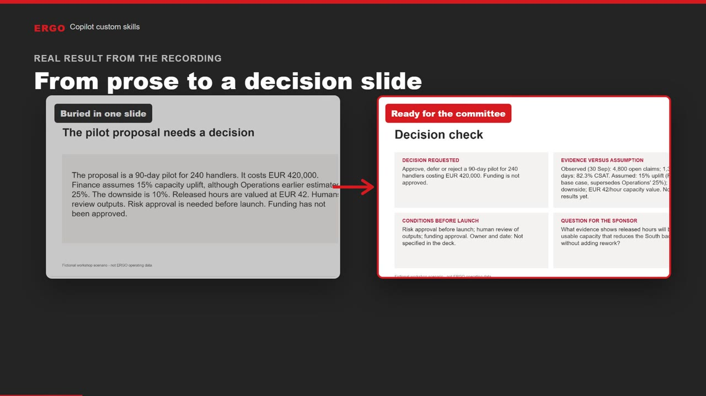
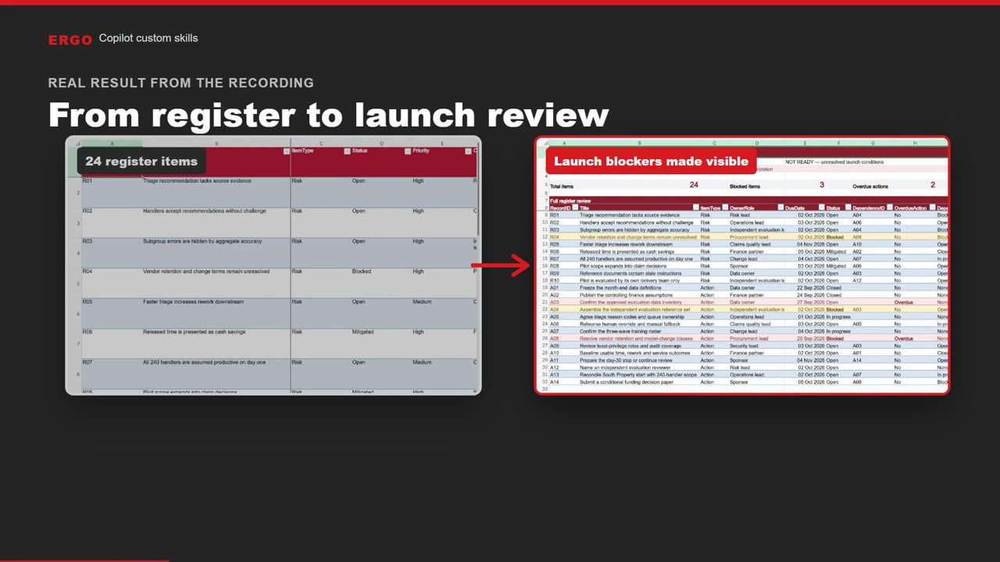

Prepare a committee decision check
A dense proposal slide becomes a clear final slide: the decision, evidence, launch conditions and one question for the sponsor.
Open PowerPoint exerciseTurn a repeatable review into a Copilot skill. Then ask in plain language and let Copilot apply your method.

A dense proposal slide becomes a clear final slide: the decision, evidence, launch conditions and one question for the sponsor.
Open PowerPoint exercise
A 24-item pilot register becomes a formula-based launch review showing what is blocked, what is overdue and why.
Open Excel exerciseA skill is a short set of instructions: when to use it, what steps to follow and what the result must include.
You do not need a long prompt. A normal request such as “Do a committee readiness check” is enough.
Copilot prepares a consistent first draft. You still check the facts, assumptions and final decision.
All numbers, names and records are fictional and created for this workshop. They are not ERGO operating data.